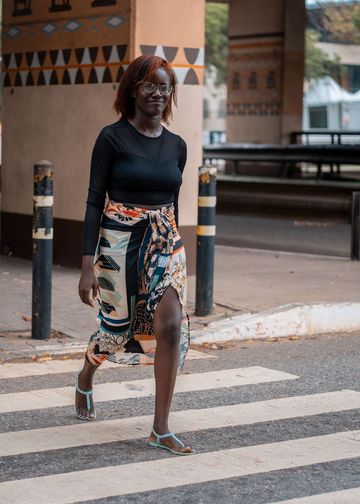
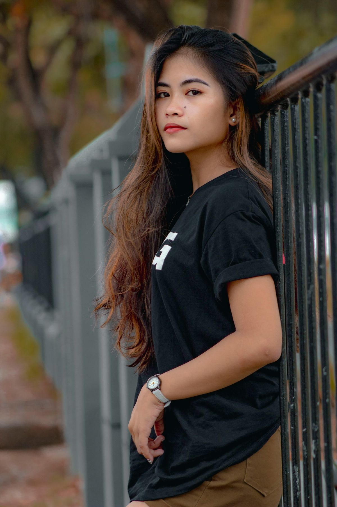
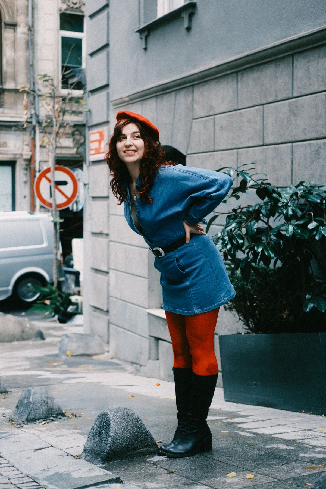

Campanha e narrativa
Uma abertura visual marcante e navegação por inspirações.
Uma vitrine conceitual organiza referências por estilo e permite que a cliente indique a preferência de tamanho e cor antes de falar com a equipe.
FOTOS ILUSTRATIVAS · NÃO REPRESENTAM ESTOQUE
Uma abertura visual marcante e navegação por inspirações.

02 · VITRINE DIRETAOrganização objetiva, filtros e seleção de preferências.

03 · LOOKBOOKUm percurso editorial para descobrir combinações e estilos.
Creme e branco, carvão suave, rosé e dourado acompanham a assinatura feminina da Rubi. A escolha entre os três caminhos fica disponível no botão Design.
A vitrine ajuda a cliente a chegar indicando estilo, tamanho ou cor que deseja consultar. A equipe confirma valores, variações e disponibilidade. Sem inventar catálogo nem estoque.